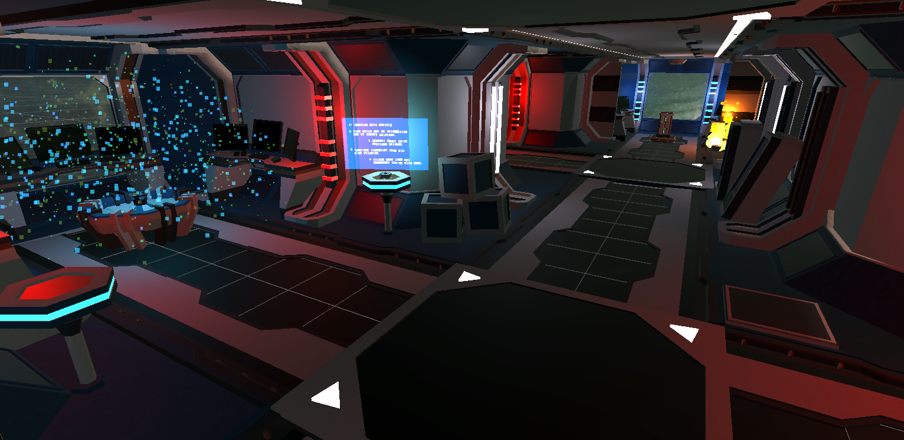
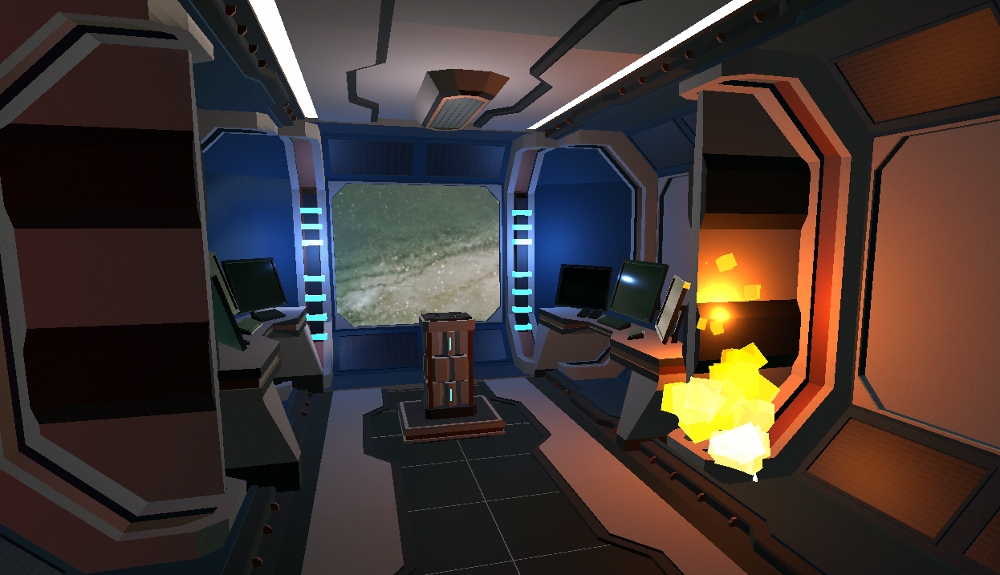
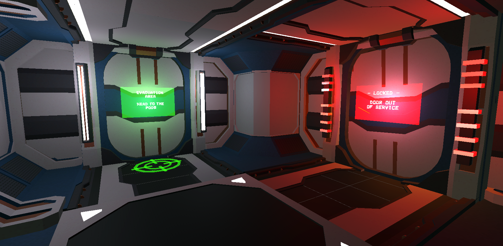
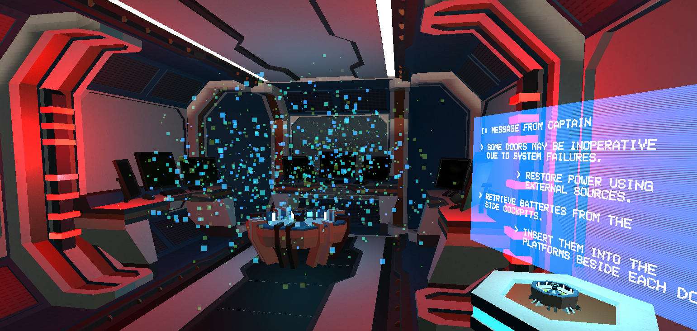
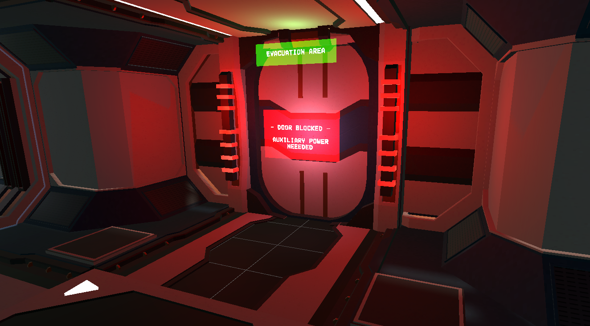
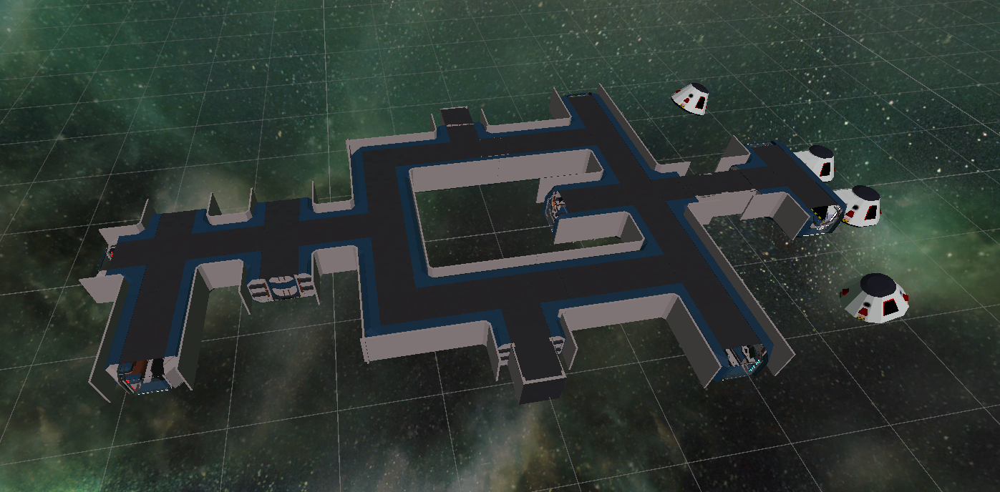

Escape the Unknown
ChatGPT
I designed and built a VR escape experience set inside a failing spaceship, using environment, colour, and sound to guide players without breaking immersion.
The project revealed a key insight: in VR, immersion is fragile: remove even a single layer, and the experience starts to fall apart.
CONTEXT
This project started as an exam for a VR Design course during my master’s degree. The brief was intentionally simple: a functional VR experience was enough, even with placeholder assets.
I chose to push beyond that. Instead of building something minimal, I focused on creating a coherent experience through atmosphere, sound, and environmental storytelling.
It was also my first serious encounter with Unity. Beyond learning the technical foundations like physics, collisions and triggers, I started understanding how these systems shape what a user perceives and feels inside a virtual environment.
The challenge wasn’t just to make something that worked, but to make something that felt believable from a user’s perspective.
The project had real constraints:
- Solo development across 3 months
- No VR headset available: all testing done in desktop mode
- Two scenes required, completable in 5 to 10 minutes to avoid cybersickness
- Free assets only
- Instructions had to exist within the VR itself
- Final evaluation by three professors using an actual headset
THE ENVIRONMENT
I chose a spaceship setting to create a controlled, enclosed environment where space, navigation, and atmosphere could be tightly designed.
The concept drew inspiration from Dead Space and Alien Isolation: not for horror, but for their ability to create tension through environment rather than explicit threats.
The ship is damaged and empty. Damage creates urgency, while emptiness amplifies isolation. This was partly a technical constraint, but also a deliberate design choice: without enemies, the environment itself had to carry the experience.
Every space was designed to be immediately legible. Instead of relying on instructions, the environment communicated what was safe, blocked, or dangerous through visual cues:
- OPEN PATHSclear floor space, functioning lights, green hologram markers
- BLOCKED PATHSBlocked paths crates and debris physically obstructing doorways
- DANGEROUS AREASfire, flickering lights, circuit flares signalling structural failure
- LOCKED DOORSred warning signs and alarm lighting indicating no entry
The colour logic became the backbone of navigation: green signalled safety and progression, while red indicated danger or blocked paths. Players could understand where to go without relying on text.



GUIDANCE SYSTEM
The brief required instructions to exist within the VR. Most projects solved this with static instruction panels at the start.
I treated guidance as part of the experience instead.
The captain’s hologram messages were placed at key decision points, acting as contextual instructions embedded in the world. Each message guided the player only when needed, maintaining flow without breaking immersion.
This created a diegetic guidance system: information existed inside the environment, consistent with the narrative and the player’s role.
During evaluation, professors highlighted a limitation: holograms alone were not sufficient. Directional signage throughout the environment would have reinforced navigation.
This revealed an important insight: guidance in immersive environments works best as a system, where multiple cues like lighting, signage, and narrative elements support each other.


LAYOUT
The spatial layout was designed to make navigation an active part of the experience.
Instead of a linear path, the ship used Y-junction corridors that forced players to interpret environmental cues and make decisions. Navigation became a problem to solve, not just a path to follow.
Combined with colour coding and hologram guidance, the layout itself became part of the interaction design.
The top-down view highlights this structure: branching paths, dead ends, and escape points placed at the edges of the environment.

TESTING & FEEDBACK
The final evaluation was the first time the experience was tested using an actual VR headset. During development, no hardware was available, and all testing was done in desktop mode.
This gap between design and real usage quickly became visible:
- Some walls could be passed through: collision detection gaps not visible in desktop testing
- Desktop-to-headset input mapping created control inconsistencies nobody could have anticipated without hardware access
- The teleportation system worked but felt wrong: instant point-to-point movement broke presence. A fluid transition would have been significantly better
- Professors noticed the absence of footsteps and blaster sounds, but appreciated the existing soundscape: alarms, explosions, emergency alerts
- Hologram guidance was praised but flagged as incomplete without directional environmental cues throughout the corridors
The hardware constraint was the most honest lesson: you cannot validate a VR experience without testing in the target medium. Designing blind introduced problems that no amount of desktop testing could have revealed.
LEARNINGS
This project showed me how fragile immersion is, especially in VR. Missing elements (sound, movement transitions, navigation cues) break the experience far more quickly than visual imperfections.
Immersion is not built from individual features, but from how multiple systems work together to create a coherent experience.
It also introduced me to Unity, which later allowed me to move faster and with more control during my thesis project.
More importantly, it shaped how I think about user experience in virtual environments; a line of thinking that directly led to the research question I explored in my thesis project.